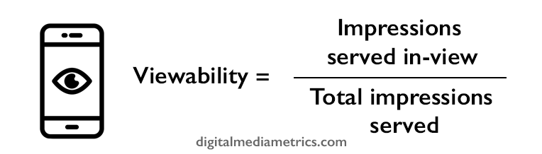

Viewability in media, advertising and digital marketing
What is viewability in digital advertising? How do you calculate it?
What are the current standards adopted across the industry?
What is viewability in digital advertising?
Viewability is digital advertising and marketing
is the percentage (%) of the total number of
impressions
served that were "in-view" to the user. The definition of "in-view"
is a hotly debated subject, but the current most widely adopted standard
is from the MRC (Media Ratings Council) is the following:
- Display ads (i.e. banners): 50% of the ad (pixels) has
to be served above the fold for greater than or equal to 1 second,
post-ad render
- Video ads: 50% of the ad (pixels) has to be served above
the fold for greater than or equal to 2 consecutive seconds,
post-ad render
Read in more detail about the MRC standards here
Read in more detail about the IAB’s viewability guidelines:
https://www.iab.com/guidelines/iab-measurement-guidelines/
Viewability was introduced to allow advertisers and agencies to
measure how much of the display and
video impressions they were buying, were actually being served
and had the chance to be seen. Before, you had to trust that a
publisher would serve impressions
above the folder. This was a key issue when programmatic buying
methods were first introduced, as often the inventory available
was remnant, i.e. low quality, below the fold
impressions
the direct advertisers were not buying.
Nowadays, viewability is a key metric that programmatic traders
and buyers focus on when managing campaigns. All major DSPs will
report on it, alongside third party ad verification vendors such
as Integral Ad Science or MOAT.
Viewability formula
To calculate viewability, you need the following metrics:
1. Total
impressions served
2. Impressions
served in-view (taken from your ad verification provider or DSP)

What is a good viewability rate? What are the benchmarks?
This is a tricky question as ultimately it depends on what your campaign
goals are. If it is brand focused, and you want to reach your target
audience (not necessarily wanting them to
click) and
catch their attention, then you want to optimise your programmatic bidding
to high in-view placements. 60% - 70%+ viewability should be a minimum.
If you goal is more
performance based, if you want a user to
convert
or visit your website, then you should not worry as much about viewability
compared to branding campaigns.
This is because it is very hard to optimise towards both
performance AND
viewability. As a performance
advertiser, you can afford to bid and win lower viewability
impressions
if the impressions
that you are winning are driving business results.
Despite seeming counter-intuitive, having a high overall viewability,
serving ads that are more likely to be served above the fold in key
positions of a website, may not drive
performance goals
(i.e.
conversions or
clicks). You must find the right balance between a strong
viewability level and
performance goals (CPA, CPC, etc.).
Why do I have a low viewability?
Remember, low viewability (i.e. 50%) may not be a bad thing if the
50% of the ads served in view are driving a strong performance in
regards to your KPI. However viewability is one of your main objectives,
then there are a number of reasons why it could be low.
First off, if you are running a programatic display or video campaign,
you may simply be bidding too low in your DSP. The lower the bid,
the more likely you will win the less desirable inventory, which is
often found below the fold on publishers’ websites.
You also may be bidding and optimising towards another objective
so for your bid, the DSP is prioritising other metrics over viewability.
Furthermore, you should review how long it takes for your ad to load.
If it is heavy and uses rich media (video and other heavy animation),
then the ad might not be loading time for your verification solution
to register the ad in-view. Look to using simpler ads, switch to HTML5
creative as standard and optimise the creative so that it is a smaller
file size. Non-IAB standard formats sometimes have trouble recording
viewabilty correctly so always check with your verification supplier
rep for any in depth troubleshooting.
We recommend reviewing the "time-in-view” metric (Integral Ad Science
offers this:
https://integralads.com/capabilities/time-in-view/)
to see how long your ads were actually in-view. This is crucial for
video campaigns - how do you know if your video ad is always playing
in-view?
How do I improve the viewability of my campaign?
The main way of improving your campaign viewability
will be by optimising (increasing) bids to the sitelists, inventory
and supply sources, audiences and ad formats that are driving the
strongest rate. This has to be done in relation to the maximum bid you
planned the campaign at as increasing the bid to get perfect 100% viewability
will increase your CPM
to levels far higher than you originally set out with.
Other ways involve buying impressions on a vCPM (viewable cost per 1000
impressions). You will pay a premium, but every
impression
measured out of view by your third party supplier will not be billed
to you. This means you will only pay for in-view
impressions.
If you are buying video
impressions, we recommend you also pay a premium for video formats
that pause out of view. If not, the video will likely play even if the
users scrolls past it and it goes out of view.